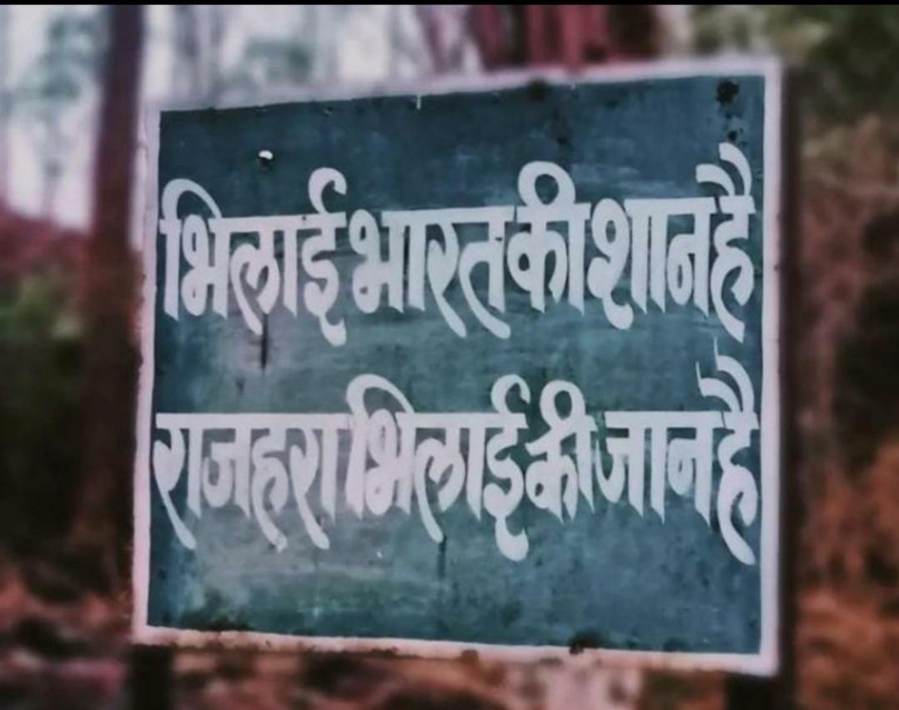
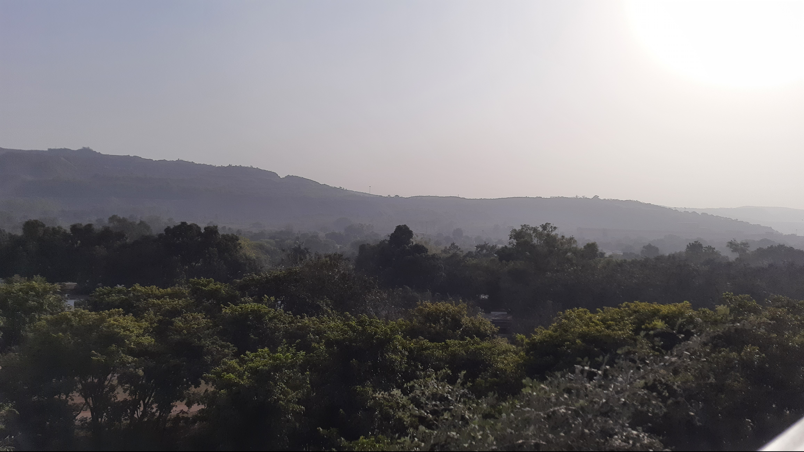
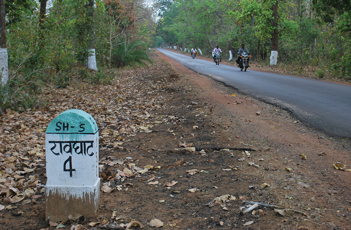

For the last 50 years, the Bhilai Steel Plant, which is India's largest integrated steel plant has got its supply of iron ore from Dalli Rajhara's mines. Dalli Rajhara, a municipality which is also an industrial city is located 90km south of Durg in Chhattisgarh. It is a part of the Rajhara group of mines. Iron ore mined in this area are of two types - hematite and magnetite. Other mines in the neighbourhood contain varieties such as dolomite, lime and other raw materials that are integral for the production of steel.These iron ore mines are major contributor's in the economy of Dallirajhara providing employement to the people from all over the country . The raw iron ore extracted is taken using goods train("Maal gadi")to Bhilai where steel is made by processing the raw iron ore. There is a popular saying in Dallirajhara that "Bhilai desh ki shaan he magar Rajhara Bhilai ki jaan he "as most important reason for creation and functioning of Bhilai steel plant is presence of iron ore in nearby Dalli rajhara .

Iron ore in Rajhara mines is slowly finishing
 Started in 1960, the Dalli Rajhara mines seem to be nearing their capacity - they only have about 100 million tonnes iron ore reserves left, enough to last a maximum of ten years. I doubt if the residents of the area would've even dreamed that it would've come to this. A long time ago, this town had an immense amount of natural resources and deep, dense forests but things have changed in the last 50 years.This is quite sad for most of the dalli residents as most of the people living here eventhrough comes from all the part of the country but everyone loves the enviroment of Dalli rajhara which offers peace of life just like vilages(no big cities like problems of less space avalability,and untidy places ) and also offers almost every modern day lifestyle neccesity from cineplexes to proper internet connectivity to rail service and so on.
New iron ore deposits found in nearby town
 Even through the iron ore reserves are getting finished in the Rajhara mines but iron ore deposits founded in Raoghat which is almost 90km from Dalli rajhara gives new choices to BSP.The Rowghat Mines contain the largest iron ore deposits in Chhattisgarh, India, after the Bailadila Iron Ore Mine. Rowghat Mines' reserves have been assessed at 731.93 Mn tonnes. Bailadila has reserves assessed at 1.343 Bn tonnes.So most likely probability is that after the iron ore deposits from Dalli rajhara gets exhausted then the whole setup and manpower will be shifted to Raoghat .Also as distance of Raoghat from Dallirajhara is almost 2hrs so that means many of mines worker can stay in Dalli rajhara and do up-down each day from Dallirajhara to Raoghat which everyone hopes will result into hustle and fustle continuing in Dallirajhara .Raoghat :and its connectivity with major cities like Bhilai and Raipur
Raoghat-Dallirajhara train-route connection has been started as part of Dallirajhara- Jagdalpur line.The proposed Dalli Rajhara-Jagdalpur rail line, on paper for almost three decades, once completed, would connect Dalli Rajhara to Jagdalpur, both towns being in Chhattisgarh state in India. It would also connect Raipur, the capital city of Chhattisgarh, to Jagdalpur by rail via Durg. Jagdalpur, which is about 300 km from Raipur, is currently meaningfully connected to it only by road.This rail route major objective is to connect Raoghat to Bhilai via Dallirajhara .Moreover as BSP has spent a lot of money on building homes, schools and hospitals for its workers in Dallirajhara 60 years back .so it is also a possibility that BSP will not develop much residential home and other facilities for its worker in Raoghat again and worker will up-down from Dallirajhara to Raoghat for work and their families will stay in Dallirajhara .
Opposition to the rail line and development of mines in Raoghat:
Opposition from naxalites:
Project, after facing many years of procedural and clearance related hurdles, is currently facing stiff resistance and opposition from Naxalites.[11][12]
The Rowghat iron ore mining project had been facing resistance right from inception following threats from the Naxalites. The left extremist group have a strong influence in the Rowghat mines area and their opposition delayed start of the work.
Union Home minister of Government of India, during February 2015, had assured that centre would provide all necessary assistance and would deploy adequate security personnel following Naxalites open threat. Earlier, the rebels had set equipment on fire when the authorities tried to start the work on Rowghat project.[13]
In February 2016, two troopers of Sashastra Seema Bal (SSB) were injured after an improvised explosive device (IED) planted by Maoists went off in the project area. Notably, the passenger train from Dallirajhara to Gudma under the project was also flagged off by Railway Minister via video conferencing on the same day.[14]
In May 2017, a Sashastra Seema Bal (SSB) jawan was injured in an IED blast triggered by Maoists.[15]
In November 2017, one of the project contractor's son was kidnapped and later shot dead by Naxals. According to police, the Maoists have been opposing the project since its inception, fearing that the construction of the rail route will speed up the development work in Bastar thereby uprooting them from the region.[16]